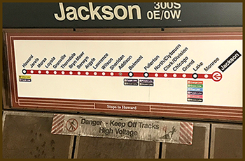
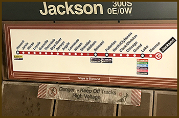

My Red Line experience began early one Tuesday Morning. I had difficulty sleeping because I truly did not know what to expect. I parked my car at the Lincoln Park Campus and followed the other students, parroting what they did. I swiped my Ventra card and headed up the stairs. I had read online to take the 95th Street train to Jackson. It was a breeze.
After my loop classes were over, I headed back to Lincoln Park for an evening train. Unfortunately, a rather inebriated fellow had urinated on the floor near where he was sleeping. Prior to exiting, he urinated again for good measure. Welcome to the Red Line.
 
